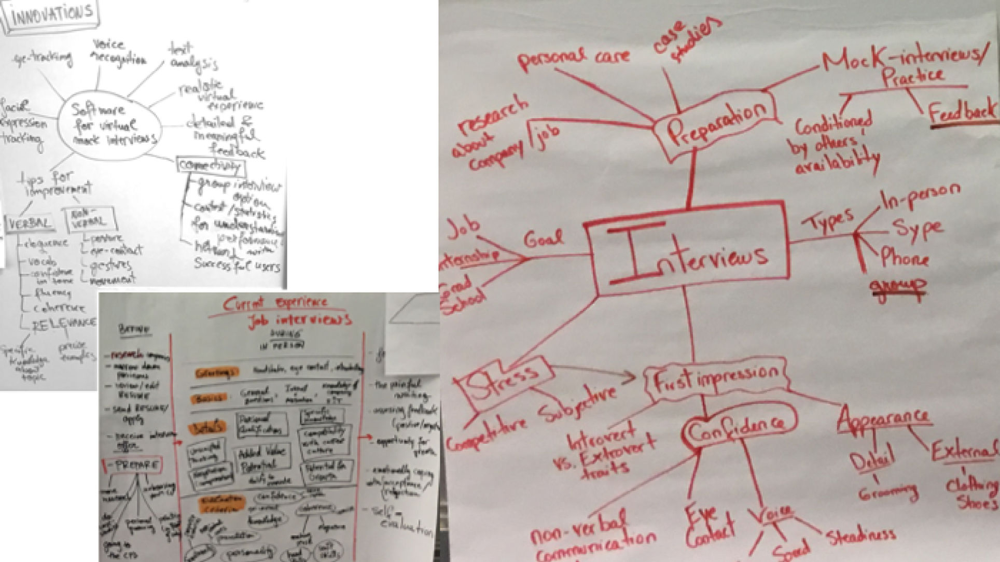

iPrep
Summary: iPrep was a collaborative design thinking exercise that I worked on with Ioana Solomon, Dartmouth '19. Our guiding question was: "How might we use computing and connectivity to improve the experience of preparing for interviews?". We came up with a software that allows users to practice and receive AI-powered feedback that would help them improve their skills.
Role: team member (team size: 2)
Timeline: 1 week (April 2017)
Context: ENGS 12: Design Thinking Class
Description: The project is a concept presentation for the prompt of digital dreams: think of ways that technology could respond to a human need by 2025. We brainstormed dozens of human experiences and chose interviewing as a painpoint for college students and beyond.
User Research


Once we chose the topic of preparing for an interview, we started exploring the challenges connected to this experience. We thought about who is left behind, what are their needs, and what is our opportunity to solve those needs.
We then used different ways of looking at the problem by creating mind maps and user journeys.

We asked Dartmouth students: How do interviews make you feel? Got feedback from 24 students, these quotes convey their general attitudes.
In short, here is what we learnt:

Before we started designing, we adopted the following Point of View.

Everyone struggles with interviews.
But people with introverted traits and those who come from low-privilege backgrounds face even more difficult odds. Interviews are fast, first impressions really matter, so presentation and communication often overshadow actual merits and skills.
Brainstorming
With these insights in mind, we thought about how we might…
Bridge the gap in preparation: Use technology to equal the playing field for users with different personality traits and socioeconomic backgrounds;
Make it safe to fail: Allow the user to comfortably and privately simulate real-life scenarios. Let them fail early and often, so that the real interview goes well.
Give more useful feedback: Provide better, more detailed, more objective feedback to improve self-awareness

We mapped out the user journey surrounding our proposed solution and emphasize the emotional component in particular. We wanted to be of help to people who were rejected and need to re-build their confidence by continuously practicing using iPrep.
Solution Demo
I created a series of mock-ups in Sketch that present the features tha app would have. Here is a demo of what it would look like going through the interview preparation using iPrep: